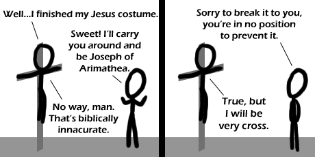

Comic JK 447
When I Feel Like It
⇤
<
?
>
⇥

⇤
<
?
>
⇥
Forum
.
RSS
.
Digg
.
Facebook
.
Reddit
.
Twitter
.
Stumbleupon
echo " Enter your thoughts on number 447 here. Please, no spamming, trolling, or phreaking. Du-dun-tish!! staples the most abundant element in the universe -- � > The second fundamental binding force in the universe (the first of course is duct tape) Don't forget the week force: PAPER CLIPS! The many things you can do with retards... - Negative Twoth Ba dum ts! I lulzed > Nipple gun! What would Jesus do? - Oh, wait... Jesus was actually gay, is what I read. Not that there's anything wrong with that. >That was the subject of a play. A FICTIONAL play. Not a historical document of any significance, a FICTIONAL PLAY WRITTEN BY AN AMERICAN STUDENT! Do you think Romeo and Juliet actually happened too? >>Nope, that was complete fact. Can't you tell the works of a [science] fiction writer from pure truth? I hear there's an opening at the scientology center you'd be perfect for. >>>The fact remains that Jesus was actually gay. Write a play about it, do whatever you want. That's why Christians are so touchy about sexuality. >>>>Now now, how in the world did this discussion turn from nipples to Jesus's sexuality...actually, how did it get to nipples...If only the world were a rational place...let's talk about programming languages (anything BUT JAVA) >>>>>And let me guess, you also believe the Da Vinci code? > butt java! hehe Thought you wanted to talk about programming languages. What does Java have to do with that? >epic win!!! >>Secret butt fun! Is the alt-text referencing XKCD so obviously that no one would bother to bring it up except Captain Obvious? > Someone did, but the word scientifically turned into "nipples". >> In other words, someone was childish and has a low IQ and so edited the message in order to prove his/her stupidity. >>> why would they need to prove that to us we already know. >>>> Because they're too stupid to realise that? Hey guys, my backups of these discussions are now available at lukeshu.ath.cx/comicjk no need to remember my IP anymore! " | sed "s/nipple/staple/;s/Nipple/Staple/" # now to see if this is a unix shell in disguise cocks god this was funny.